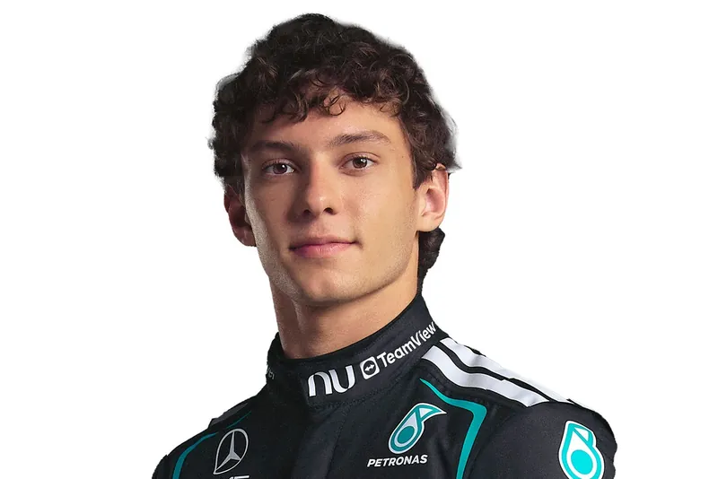

Ficha de piloto: Antonelli
Biografía y palmarés del líder del campeonato.
Ver fichaDatos clave a un clic: perfil del piloto líder, specs del monoplaza y el significado de cada bandera de pista.
Biografía y palmarés del líder del campeonato.
Ver fichaPotencia, peso y velocidad máxima del reglamento actual.
Ver specsQué significa cada bandera que ves en la transmisión.
Ver reglas
Piloto italiano de Mercedes, líder del Campeonato de Pilotos 2026, buscando su primer título mundial en su segunda temporada en la parrilla.
| Nacionalidad | Italia |
| Escudería | Mercedes |
| Puntos 2026 | 242 |
| Victorias | 6 |
| Poles | 6 |
| Podios | 10 |
Los datos clave del monoplaza bajo el reglamento técnico vigente de la Fórmula 1.
| Potencia combinada | ~1000 CV |
| Peso mínimo | 798 kg |
| Velocidad máxima | ~360 km/h |
| 0-100 km/h | < 2.6 s |
Amarilla: peligro en pista, prohibido adelantar.
Verde: pista despejada, se reanuda el ritmo normal.
Azul: un coche más rápido se acerca, cede el paso.
Roja: sesión detenida por completo.
A cuadros: fin de la sesión o la carrera.